vignettes/vgn_04_Run_isobxr_tutorial.Rmd
vgn_04_Run_isobxr_tutorial.RmdThis vignette is designed to drive the user through a step-by-step tutorial for the use of the run_isobxr function.
The user can run the same box model simulations as described in this vignette using tutorial files.
The user can also find general information about the run_isobxr function in the 3 - Run_isobxr: presentation vignette.
If not done yet, install the isobxr package (installation instructions here).
Load isobxr in R:
Download the tutorial files
Unzip the ABC tutorial file and place it in the working directory of your choice.
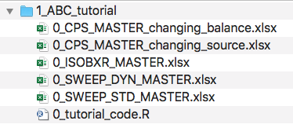
Open the R code file (0_tutorial_code.R) with Rstudio.
Update the correct working directory path to the 1_ABC_tutorial folder
This could for instance look like:
workdir_ABC <- "/Users/username/Documents/1_ABC_tutorial"
We consider here the case a balanced and closed system of 3 finite boxes A, B and C. This system is defined in the 0_IOSOBXR_MASTER.xlsx file as follows:
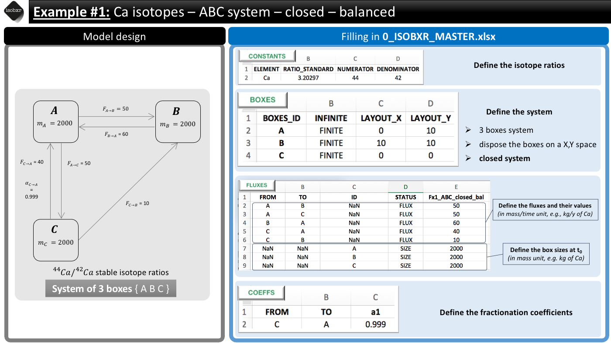
run_isobxr(workdir = workdir_ABC, # work. directory SERIES_ID = "ABC_closed_balanced", # name of the series of runs flux_list_name = "Fx1_ABC_closed_bal", # use this list of fluxes/sizes coeff_list_name = "a1", # use list a1 of fractionation coeffs. t_lim = 2500, # run the model over 2500 days nb_steps = 250, # calculate system state in 250 steps time_units = c("d", "yr"), # run time units (days), plot time units (years) to_DIGEST_evD_PLOT = TRUE, # export plot as pdf to_DIGEST_CSV_XLS = TRUE, # export all data as csv and xlsx to_DIGEST_DIAGRAMS = TRUE) # export system diagrams as pdf
run_isobxr are the following:
#> All boxes are FINITE
#> Running ana_slvr (balanced finite boxes)This is expected because:
The {ABC} system being closed, the run_isobxr function identified that all boxes are finite.
The {ABC} system being balanced, the run_isobxr function identified that the analytical solving of the model can be performed (using the analytical solver ana_slvr).
The outputs of this run are found in the working directory declared as workdir to the run_isobxr function. These outputs should be structured as follows:
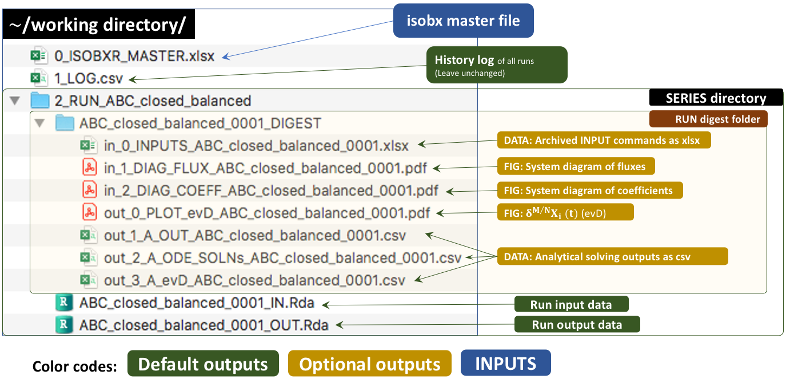
The run_isobxr function produced an overview of the system as diagrams (pdf) for fluxes (left) and isotope fractionation expressed ‰ (right) shown below:
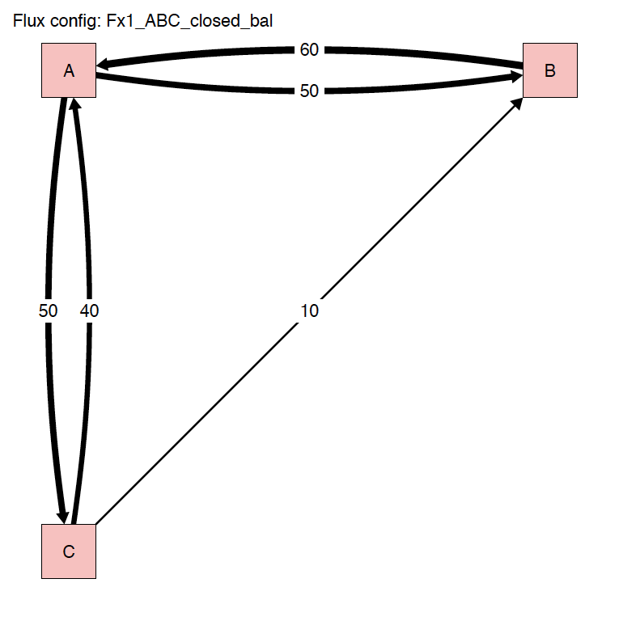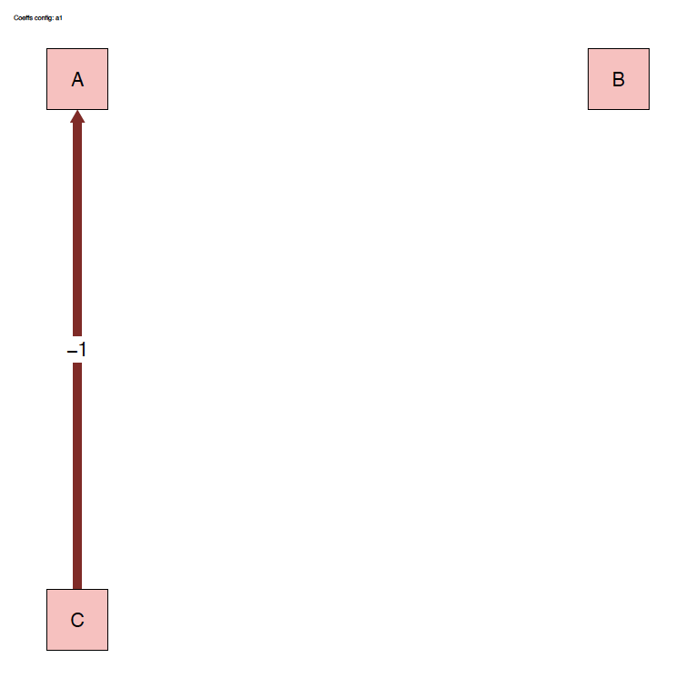
The run_isobxr outputs include the evolution of isotope compositions over the run duration (edited as pdf), shown in years for this run.
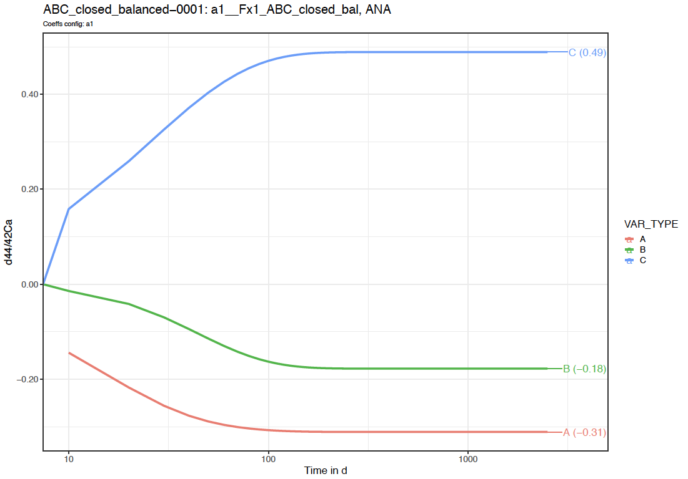
Note that the time axis is displayed with a log scale.
We thus observe here a relaxation of the system to a steady-state where box A tends to -0.31‰, B to -0.18‰ and C to 0.49‰.
As run_isobxr was run with export of csv and xlsx datasets (to_DIGEST_CSV_XLS = TRUE), this run provides user with the following datasets.
in_0_INPUTS_ABC_closed_balanced_0001.xlsx: An archive of all the commands and system definitions used for the run.
out_1_A_OUT_ABC_closed_balanced_0001.csv: A csv summary initial and final state of the system (box sizes, delta values).
out_2_A_ODE_SOLNs_ABC_closed_balanced_0001.csv: The solutions of the differential equations matrix inversion (analytical solving). This includes eigen-values, -vectors, relaxation times.
out_3_A_evD_ABC_closed_balanced_0001.csv: The dataset of stable isotope compositions (delta values in ‰) in all boxes over run duration.
We consider here the case a closed system of 3 finite boxes A, B and C.
The fluxes are however unbalanced: boxes A and C have unbalanced inward and outward fluxes.
This system is defined in the 0_IOSOBXR_MASTER.xlsx file as follows:
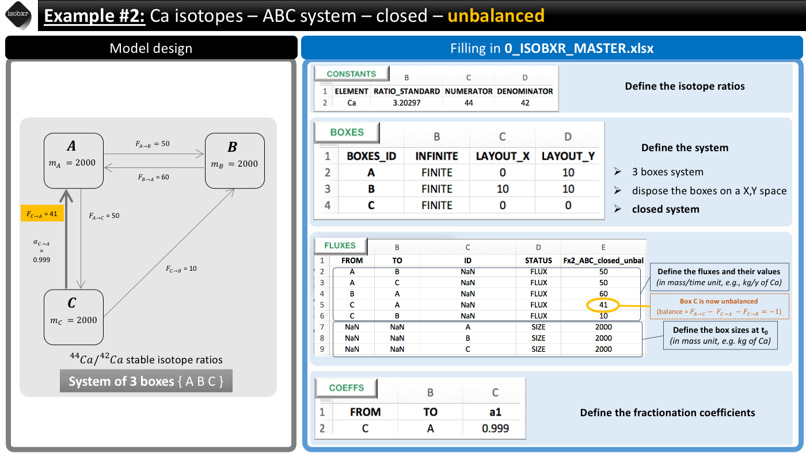
run_isobxr(workdir = workdir_ABC, # work. directory SERIES_ID = "ABC_closed_unbalanced", # name of the series of runs flux_list_name = "Fx2_ABC_closed_unbal", # use this list of fluxes/sizes coeff_list_name = "a1", # use list a1 of fractionation coeffs. t_lim = 2500, # run the model over 2500 days nb_steps = 250, # calculate system state in 250 steps time_units = c("d", "yr"), # run time units (days), plot time units (years) to_DIGEST_evD_PLOT = TRUE, # export plot as pdf to_DIGEST_CSV_XLS = TRUE, # export all data as csv and xlsx to_DIGEST_DIAGRAMS = TRUE) # export system diagrams as pdf
run_isobxr are the following:
#> All boxes are FINITEThis is expected because the {ABC} system being closed, the run_isobxr function identified that all boxes are finite.
However as the system is unbalanced. The run_isobxr function prints the following additional messages:
#> A IN-OUT BALANCE is positive
#> C IN-OUT BALANCE is negative (max run: 2000 t units)
#> Running num_slvr (unbalanced finite boxes)
#> Warning: Updated total run duration. Total run time has been changed from 2500
#> to 2000 (limiting box: C)The function warns the user that:
The outputs of this run are found in the working directory declared as workdir to the run_isobxr function. These outputs should be structured as follows:
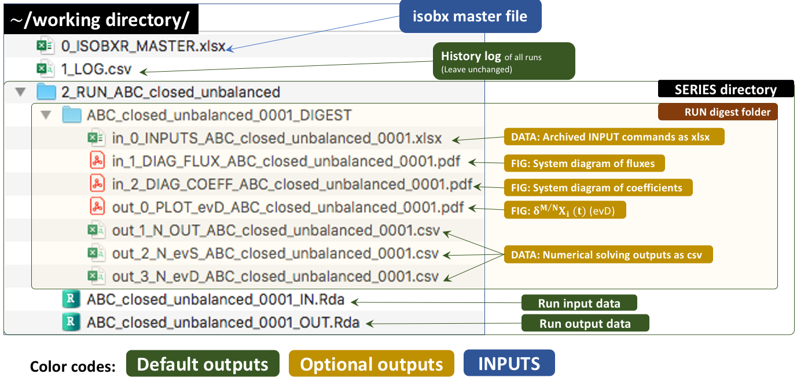
The run_isobxr function produced an overview of the system as diagrams (pdf) for fluxes (left) and isotope fractionation expressed ‰ (right) shown below:
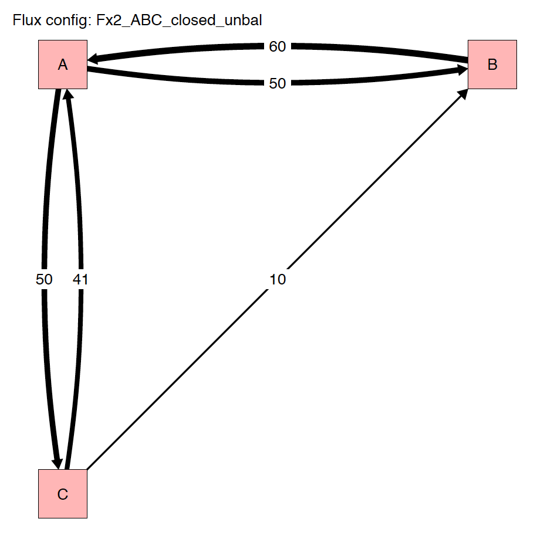
The run_isobxr outputs include the evolution of isotope compositions over the run duration (edited as pdf), shown in years for this run.
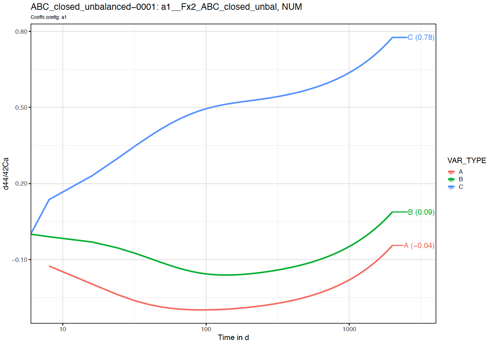
Note that in this case, we observe here no relaxation to a steady-state.
As run_isobxr was run with export of csv and xlsx datasets (to_DIGEST_CSV_XLS = TRUE), this run provides user with the following datasets.
in_0_INPUTS_ABC_closed_unbalanced_0001.xlsx: An archive of all the commands and system definitions used for the run.
out_1_N_OUT_ABC_closed_unbalanced_0001.csv: A csv summary initial and final state of the system (box sizes, delta values).
out_2_N_evS_ABC_closed_unbalanced_0001.csv: The dataset of box sizes (masses of Ca in mg) in all boxes over run duration.
out_3_N_evD_ABC_closed_unbalanced_0001.csv: The dataset of stable isotope compositions (delta values in ‰) in all boxes over run duration.
We consider here the case a balanced system of 3 finite boxes A, B and C.
This system is however open and exchanges Ca with the environment.
This system is defined in the 0_IOSOBXR_MASTER.xlsx file as follows:
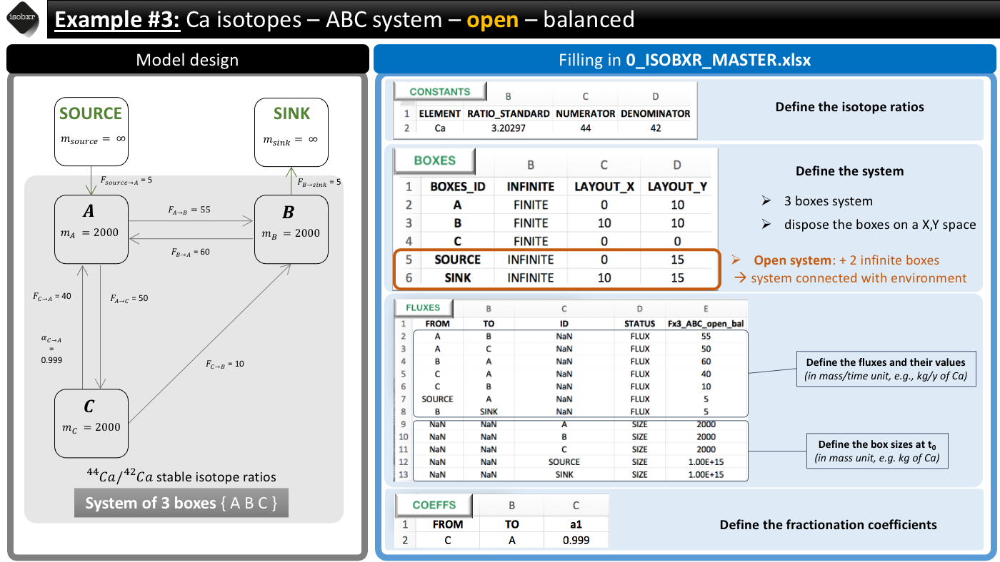
run_isobxr(workdir = workdir_ABC, # work. directory SERIES_ID = "ABC_open_balanced", # name of the series of runs flux_list_name = "Fx3_ABC_open_bal", # use this list of fluxes/sizes coeff_list_name = "a1", # use list a1 of fractionation coeffs. t_lim = 25000, # run the model over 2500 days nb_steps = 2500, # calculate system state in 250 steps time_units = c("d", "yr"), # run time units (days), plot time units (years) to_DIGEST_evD_PLOT = TRUE, # export plot as pdf to_DIGEST_CSV_XLS = TRUE, # export all data as csv and xlsx to_DIGEST_DIAGRAMS = TRUE) # export system diagrams as pdf
run_isobxr are the following:
#> The INFINITE boxes are: SOURCE, SINK
#> Running ana_slvr (balanced finite boxes)This is expected because:
The {ABC} system being open, the run_isobxr function identified that SOURCE and SINK are infinite boxes.
The {ABC} system being balanced, the run_isobxr function identified that the analytical solving of the model can be performed (using the analytical solver ana_slvr).
The run_isobxr function produced an overview of the system as diagrams (pdf) for fluxes (left) and isotope fractionation expressed ‰ (right) shown below:
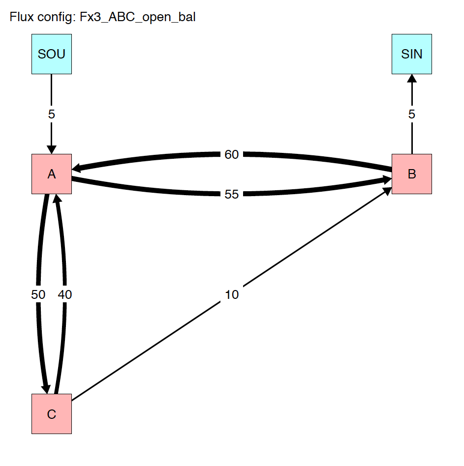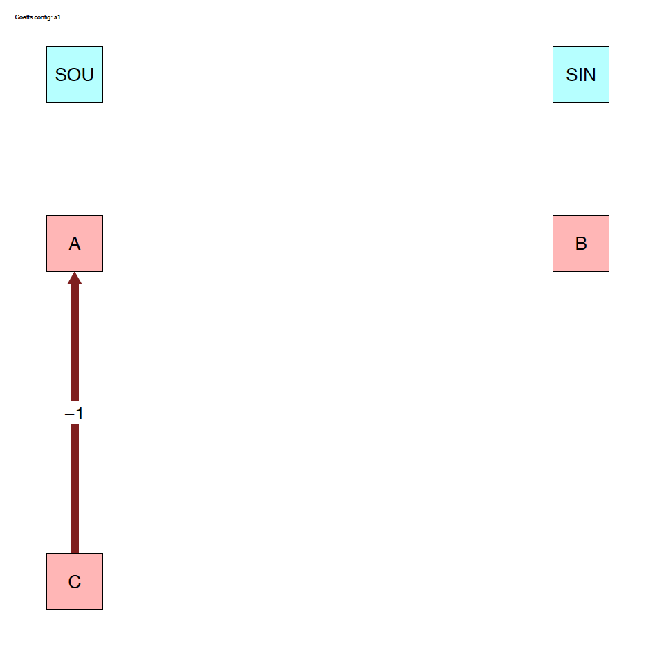
The run_isobxr outputs include the evolution of isotope compositions over the run duration (edited as pdf), shown in years for this run.
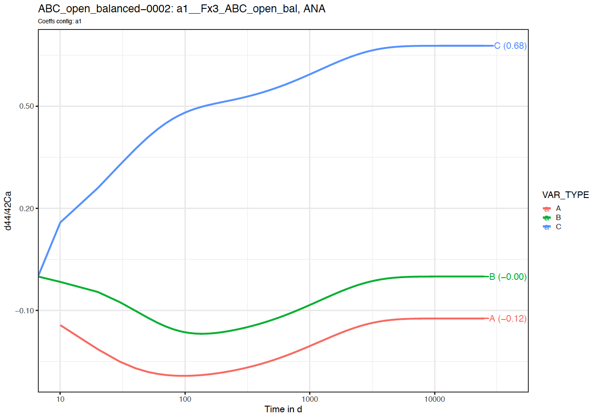
We thus observe here a relaxation of the system to a steady-state (different from example 1) where box A tends to -0.12‰, B to 0‰ and C to +0.68‰.
Note that as we didn't define the initial isotope compositions of the boxes including the SOURCE and SINK infinite boxes, the later therefore remain at 0‰ throughout the run.
Additionally to the default definition of the system, it is possible to force other parameters.
Here, we walk you through 2 of the 4 parameters that can be forced with run_isobxr: initial isotope compositions and initial box sizes.
We consider the system of example 3: System {ABC}, open and balanced.
Instead of starting by default with delta values set at 0‰ for all boxes, we want to set:
To do so we need to define a forcing parameter (FORCING_DELTA) as follows:
FORCING_DELTA <- data.frame(BOXES_ID = c("SOURCE", "C"), DELTA_INIT = c(-3, +5)) FORCING_DELTA #> BOXES_ID DELTA_INIT #> 1 SOURCE -3 #> 2 C 5
We then can run the function and specify the forcing parameter values:
run_isobxr(workdir = workdir_ABC, # work. directory SERIES_ID = "ABC_open_balanced_w_forcing_delta", flux_list_name = "Fx3_ABC_open_bal", coeff_list_name = "a1", t_lim = 25000, nb_steps = 2500, time_units = c("d", "yr"), to_DIGEST_evD_PLOT = TRUE, to_DIGEST_CSV_XLS = TRUE, to_DIGEST_DIAGRAMS = TRUE, FORCING_DELTA = FORCING_DELTA) # FORCE INITIAL DELTA VALUES
We observe the following evolution of isotope compositions with time:
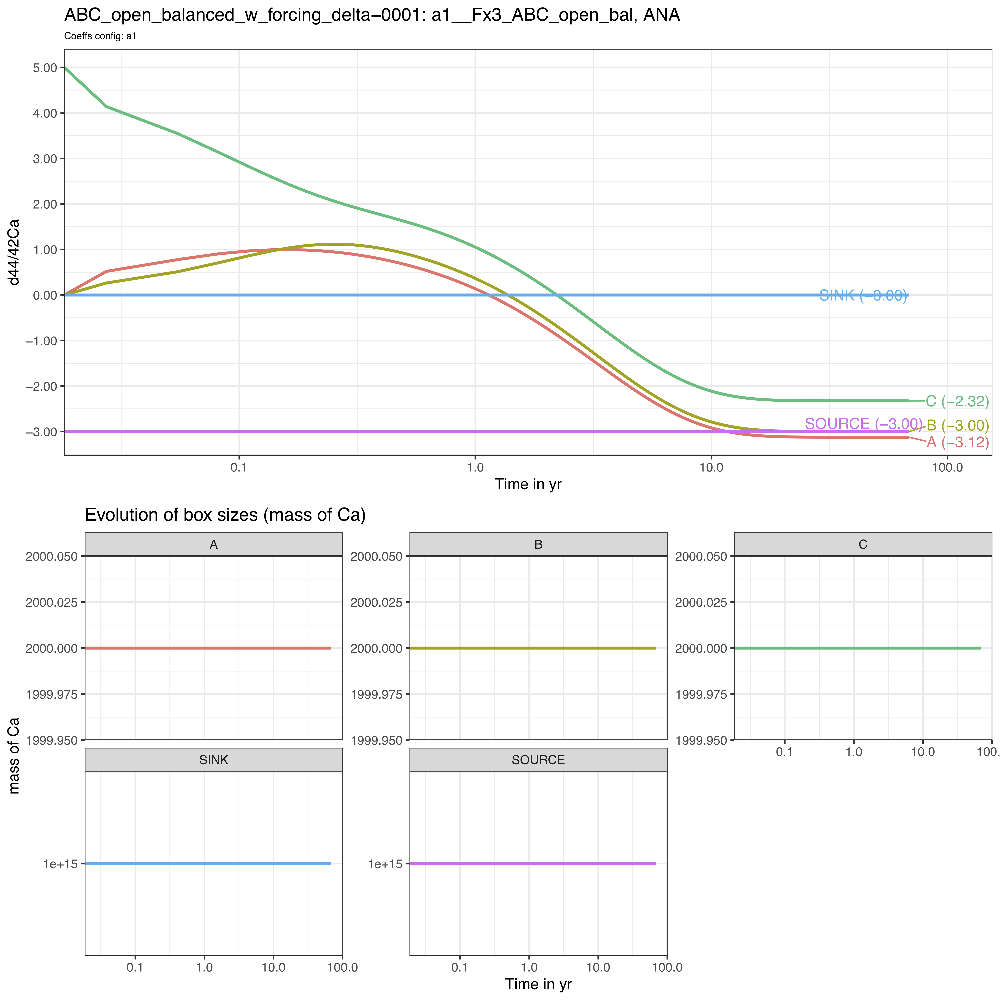
We observe that the box C starts as expected from +5‰ while the steady-state is shifted to lower values by -3‰ since the SOURCE has been set to -3‰.
Instead of starting by default with box sizes defined in the Fx3_ABC_open_bal flux list of the 0_ISOBXR_MASTER.xlsx file, we modify here the initial sizes of boxes B and C:
To do so we need to define a forcing paramter (FORCING_SIZE) as follows:
FORCING_SIZE <- data.frame(BOXES_ID = c("B", "C"), SIZE_INIT = c(50, 1e6)) FORCING_SIZE #> BOXES_ID SIZE_INIT #> 1 B 5e+01 #> 2 C 1e+06
We then can run the function and specify the forcing parameter values:
run_isobxr(workdir = workdir_ABC, # work. directory SERIES_ID = "ABC_open_balanced_w_forcing_size", flux_list_name = "Fx3_ABC_open_bal", coeff_list_name = "a1", t_lim = 25000, nb_steps = 2500, time_units = c("d", "yr"), to_DIGEST_evD_PLOT = TRUE, to_DIGEST_CSV_XLS = TRUE, to_DIGEST_DIAGRAMS = TRUE, FORCING_SIZE = FORCING_SIZE) # FORCE INITIAL SIZE VALUES
We observe the following evolution of isotope compositions with time:
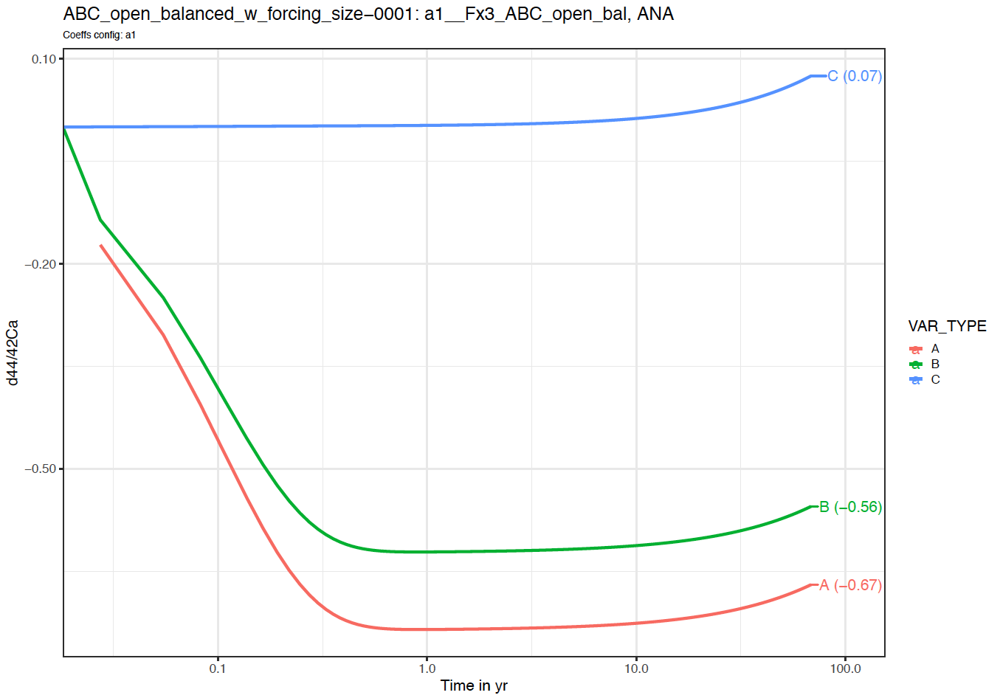
We observe that the system behaves very differently.
The steady-state is not reached over the run duration (25000 days).
The box C reacts very slowly in comparison to boxes A and C, as its size is several order of magnitudes higher than boxes A and C (1 000 000 against 2000 and 50).
The box C drives the dynamics of the system on the long-term.